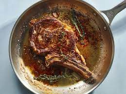

Pan Seared Steak

Ingredients
- Rib Eye Steaks
- Oil
- Salt
- Mustard
- Bourbon
Recipe
- Season steak with salt at least 45 min prior to cooking. (gets moisture out and properly seasons meat.)
- Heat oil up ripping hot and cook steak 30 seconds each side and keep flippping until thermometer reads 125 F
- For pan sauce, take some hearty mustard, bourbon, garlic and cook down so it leaves streaks after running a
wooden spoon through it.